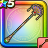

ダンシングロッド
攻略班 8.0点 / キアリーホイミぱふぱふボルテージダンスいやしのフェアリーステップ
くわしい特徴
【レベル別習得スキル】 Lv1【スパスタ】かいふく魔力+5 Lv1キアリー（消費MP：5）仲間ひとりの毒・猛毒をなおす Lv10ホイミ（消費MP：5）仲間ひとりのHPを回復する Lv15ぱふぱふ（消費MP：15）敵1体を魅了する Lv20ボルテージダンス（消費MP：23）味方1人の攻撃力か攻撃魔力を1段階上げ、休みを1回だけ無効にする効果を付与する。なお能力アップは攻撃力が高い場合は攻撃力、攻撃魔力が高い場合は攻撃魔力が上がる仕様となっている Lv30いやしのフェアリーステップ（消費MP：46）仲間全員のHPを回復し、まれに休みを1回だけ防ぐ効果を与える Lv35混乱成功率+10% Lv40魅了成功率+10% Lv45さいだいMP+12 Lv50かいふく魔力+12 【限界突破スキル】 1凸とくぎHP回復効果+5% 2凸ターン開始時MPを1回復する 3凸とくぎHP回復効果+5% 4凸ターン開始時MPを1回復する